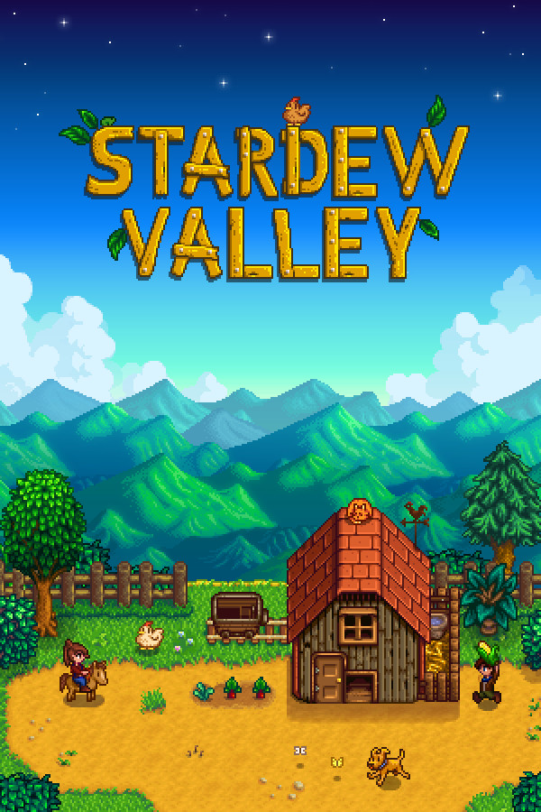
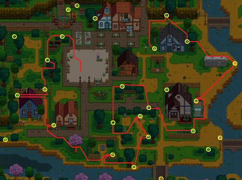
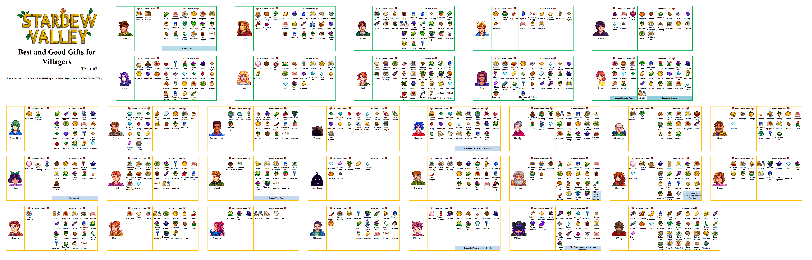

Stardew Valley
中文: 星露谷物语.

前置准备
- 观看各类入门教程.
- 星露谷物语官方中文 Wiki
- 为角色选择外貌和取名以及宠物物种和外貌时需仔细考虑, 后期满足条件后可以有偿改外貌和改名, 宠物物种不能修改.
-
在
菜单 | 选项中启用一直显示工具目标位置和缩放键.缩放键在主界面右上角状态栏中, 可以快捷的调整画面缩放比例.
前置知识
- 存档机制: 只能通过睡觉存档, 未存档前退出游戏可回档(回到当天早餐).
-
电视可以收看:
-
天气预报: 明天天气.
- 算命占卜: 今日运气. 详情请参见 运气影响的事件 - Wiki.
- 酱料女皇: 解锁菜谱. 每周日播出新的菜谱.
- 离地而居: 小贴士. 两年一轮, 然后重播.
-
钓鱼信息.
-
不随意出售季节性物品, 可能是收集包 - Wiki内容. 错过当前季节后要等来年或在有货时高价购入.
- 箱子等其他可放置物品可以放置到农场外, 但注意不要放在 NPC 可能行走的路径上, 避免 NPC 经过时破坏.
辅助工具
- 完成度检查: https://mouseypounds.github.io/stardew-checkup/
- 预测器: https://mouseypounds.github.io/stardew-predictor/
春季
收集包
春季觅食收集包: 野山葵, 黄水仙, 韭葱, 蒲公英.
高品质作物收集包: 防风草(金星)x5, ... .
觅食
韭葱: 适合食用.
黄水仙: 适合送礼.
野山葵: 适合出售.
Day 1
- 打开礼盒, 获得
防风草x15. -
砍树获得 50x木材 建造箱子. 砍树时留下木桩为后续种植保留体力.
获得所需木材后不应继续砍树, 因为达到采集 1 级后树木才会掉落种子.
-
出门采集季节性植物, 搜垃圾桶(房屋周围), 在种子店购买
土豆种子,青豆种子,花椰菜种子x2,防风草种子xN.- 采集时可以通过
菜单 | 选项 | 截屏来查看当前区域的全部内容, 可提前规划路线节省时间. - 可以降低画面缩放比例来扩大视野.
- 采集时可以通过
-
种植
土豆,青豆,花椰菜x2,防风草xN. 去除田地附件的杂草. 记得之后每日浇水, 否则植物不会生长. -
挖石头除杂草, 获取
煤炭和纤维x20. 为后期制作稻草人做准备.仅清理需要用到的地方, 节省体力和时间.
Day 2
-
去沙滩解锁钓竿.
- 捡贝壳.
- 注意沙滩上是否有
远古斑点(外形似蚯蚓).
Day 2-4
-
钓鱼挣钱, 为后续下矿前
扩充背包(2000G) 和升级钓竿为玻璃纤维棒(1800G) 做准备.- 鱼上钩后会出现一个钓鱼小游戏 - Wiki.
- 钓鱼有收益更高的地点, 详情请参考其他教程.
- 每种鱼保留一个最低品质的.
- 钓到的各类垃圾可以保留, 尤其是
CD,破损的眼镜. 达到钓鱼 4 级后可以制作回收机, 可以回收这些废物获得资源.
-
适当砍树收集木材.
- 在鱼店购买
玻璃纤维棒(1800G), 可以装备鱼饵. 可以减少 50% 等待鱼上钩的时间，并降低钓到垃圾的概率.
Day 5
- 收获
防风草xN, 保留防风草(金星)x5(若不足还需要继续施肥种植) 和防风草. -
前往小镇东北部的
矿井下矿. 每 5 层有一个电梯入口, 后期可以直接到达该层.- 进入矿洞后会出现血量, 应保持在一半以上, 请注意恢复血量.
- 顺着轨道可以找到矿车, 矿车有
煤矿. - 采集
铜矿石x25, 为后续制作熔炉做准备. 虫肉制作饵料x5.
-
在种子店购买
扩充背包(1800G), 解锁背包第二栏. 之后便可以通过Tab键切换背包栏.
累计挣到 1000G 后将获得宠物. 抚摸(好感度 +12)一次宠物, 并给宠物的碗加水(好感度 +6). 宠物好感度不会降低.
Day 6
- 前一天由于收获了作物, 达到耕种 1 级. 解锁了稻草人配方. 制作一个
稻草人, 防止在田地周边.
Day 13 (复活节)
- 与村民对话.
- 购买
草莓种子. -
与
刘易斯交谈参与比赛, 请提前查看藏宝图(下方). 在 50 秒内收集到至少 9 个彩蛋, 赢得比赛. 得到奖励草帽(帽子均为纯粹的装饰品), 后续复活节奖励为1000G.
夏季
收集包
夏季觅食收集包: 葡萄, 香味浆果, 甜豌豆.
夏季作物收集包: 西红柿, 辣椒, 蓝莓, 甜瓜.
海鱼收集包: 金枪鱼(海洋, 6:00-19:00), 红鲷鱼(雨天, 海洋, 6:00-19:00), 罗非鱼(海洋, 6:00-14:00).
湖鱼收集包: 鲟鱼(山间湖泊, 6:00-19:00).
特色鱼类收集包: 河豚(海洋, 12:00-16:00).
秋季
收集包
河鱼收集包: 虎纹鳟鱼(河流(小镇+森林), 6:00-19:00).
夜间垂钓收集包: 大眼鱼(雨天, 河流(小镇+森林)/森林池塘/山间湖泊, 12:00-2:00).
Day 16 (星露谷展览会)
自动寻找分数最高的组合: https://mouseypounds.github.io/stardew-fair-helper/
Day 27 (万灵节)
迷宫终点有一个黄金南瓜, 可用于制作女巫冒或直接出售(2500G).
